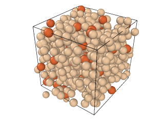

RMC POTのcfgファイルの説明
この文書は RMC の cfg 形式ファイル（RMCProfile/RMC_POT 等で使われる）について、例と合わせて分かりやすく説明したものです。必要な箇所だけを編集・抜粋して利用してください。

例：aaa.cfg の一部
以下は典型的な cfg ファイルの例です（抜粋）。先頭行は必ずそのまま保持してください。
aaa.cfg
(Version 3 format configuration file) !file created by SimpleCfg::save !
comment sio2
0 0 0 0 0 0 0 0 0 0 0 0 0 moves gen, tried, acc, pot-acc, swap-gen, swap-acc, E0shift-gen, E0shift-acc, I(Q)mu-gen, I(Q)mu-acc, f'shift-gen, f'shift-acc, goodnonlinreg
0 configurations saved
300 molecules of all types
3 types of molecules
1 is the largest number of atoms in a molecule
0 Euler angles are provided
F (box is cubic)
Defining vectors are:
7.635000 0.000000 0.000000
0.000000 7.635000 0.000000
0.000000 0.000000 7.635000
100 molecules of type 1
1 atomic sites
0.000000 0.000000 0.000000
160 molecules of type 2
1 atomic sites
0.000000 0.000000 0.000000
40 molecules of type 3
1 atomic sites
0.000000 0.000000 0.000000
0.469499871368697 0.860252930085134 0.143086911460380
0.506517212128356 0.782365058978389 -0.044207465828422
0.424472315756385 -0.948087206561890 0.159658069155206
0.519361825199738 0.779885605592665 0.290516312927309
0.447290765121153 -0.667661128775380 0.036773942632613
0.454085926915521 0.047929672102161 -0.361803986548788
0.382807239777341 -0.107567570857891 -0.467392567413229
0.322093601270465 0.152408219423707 -0.261319106024885
0.617544006208252 0.075438279462999 -0.325725383837590
0.032760774708579 0.186415932416503 -0.177798618166339
0.899782755769483 0.086198503510151 0.756794255625409
各セクションの説明（順に）
先頭行（必須）
最初の1行目は
(Version 3 format configuration file) !file created by SimpleCfg::save !
となっていますが、これはこのまま張り付けている必要があります。
コメント行
comment sio2
はコメントです。
総数や分子の概要（分子情報を使う場合）
8行目からは分子の情報が書かれています。
300 molecules of all types
ひとまず、今回は、分子情報は載せず、原子情報のみでRMCを行います。 このとき、ここには、原子数を書きます。
種類・分子サイズ・オイラー角の有無
3 types of molecules 1 is the largest number of atoms in a molecule 0 Euler angles are provided
原子の種類を書きます。今、3種類の原子を使うので3とします。 今回分子情報は使わないので、2行目は1、3行目は0とします。
セル（ボックス）情報
F (box is cubic) Defining vectors are: 7.635000 0.000000 0.000000 0.000000 7.635000 0.000000 0.000000 0.000000 7.635000
今、立方体のセルを考えます。1辺の長さがLのとき、L/2の値を書きます。 この例では、15.27Å/2=7.635Å です。
各原子種（分子種）の個数と原子数（sites）
次、各原子種の個数になります。
100 molecules of type 1 1 atomic sites 0.000000 0.000000 0.000000 160 molecules of type 2 1 atomic sites 0.000000 0.000000 0.000000 40 molecules of type 3 1 atomic sites 0.000000 0.000000 0.000000
今回の例では、原子種1が100個、原子種2が160個、原子種3が40個あります。 この次に記入する、原子座標の情報は、原子種1,2,3の順で記載します。
座標ブロック（ファイル末尾）
原子座標情報は、最後に書きます。
0.469499871368697 0.860252930085134 0.143086911460380 0.506517212128356 0.782365058978389 -0.044207465828422 0.424472315756385 -0.948087206561890 0.159658069155206 0.519361825199738 0.779885605592665 0.290516312927309 0.447290765121153 -0.667661128775380 0.036773942632613 0.454085926915521 0.047929672102161 -0.361803986548788 0.382807239777341 -0.107567570857891 -0.467392567413229 0.322093601270465 0.152408219423707 -0.261319106024885 0.617544006208252 0.075438279462999 -0.325725383837590 0.032760774708579 0.186415932416503 -0.177798618166339 0.899782755769483 0.086198503510151 0.756794255625409
この座標は、立方体セルの中心（重心）を原点として、(-1,1)の範囲で記載します。 つまり、セルサイズに応じて、原子座標をスケールさせて記入しています。 例えば、セルの1辺がL=15.27Åの場合、原子座標が(0.5,0.5,0.5)であれば、実際の座標は(3.8175Å,3.8175Å,3.8175Å)となります。
\[(cfg形式の座標)*(L/2) + 1 = 実際の座標 ( (実際の座標) mod L )*2/L - 1 = cfg形式の座標\]となります。 ここでいう実際の座標は、xyz形式や、vaspのcartesian形式の座標の値です。
実務メモ / チェックリスト
先頭行（Version 行）を削除・変更しない。
「types」「atomic sites」「molecules of type」の数や並び順を cfg を読み込むソフトの仕様に合わせる。
座標の順序は必ず「種1 の全座標 → 種2 の全座標 …」の順にする（多くの実装がこの順序を想定）。
セル情報（Defining vectors）は L/2 を期待する場合と L を期待する場合があるので、出力ソフト／入力ソフトのドキュメントで単位と意味を確認する。